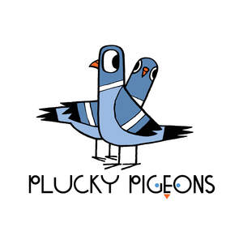

Trade Mark Journal No.2025/050 12 December 2025
UK00004305068 3 December 2025 (16,41)

- Class 16
- Books; Writing books; Non-fiction books; Manuscript books; Fiction books; Series of non-fiction books; Comic books; School writing books; Printed books; Writing or drawing books; Copy books; Educational books; Series of fiction books; Cookery books; Story books; Ledgers [books]; Travel books; Fantasy books; Covers for books; Coloring books; Colouring books; Resource books; Wirebound books; Reference books; Covering materials for books; Manga comic books; Guest books; Religious books; Picture books; Books for children; Information books; Recipe books; Jackets of paper for books; Guide books; Activity books; Composition books; Blank journal books.
- Class 41
- Film and video tape film production; Film production, other than advertising films; Film production; Film studios; Film showings; Video film production; Film editing; Production of cinema films; Film editing (Cinematographic -); Production of television and cinema films; Video and DVD film production; Film distribution; Production of films, other than advertising films; Production of cinematographic films; Production of pre-recorded cinema films; Production of video films; Production of films; Production of television films; Video tape film production; Cinematographic film studio services; Production of film studies; Film editing (Photographic -); Motion picture film production; Television, radio and film production; Film studio services; Entertainment by film; Film production services; Showing of cinematographic films; Production of films in studios; Operating of film studios; Production of motion picture films; Production of pre-recorded video films; Shows and films production; Performance of films; Consultancy on film and music production; Publishing of books; Publishing of books, magazines; Multimedia publishing of books; Publishing of books and reviews; Publishing of instructional books; Book publishing; Publishing services for books; Publication of books; Books (Publication of -); Publishing of electronic books and journals online; Publishing of electronic books and journals on-line; Publishing; Online electronic publishing of books and periodicals; Publication of educational books; Publication of audio books; Services for the publication of books; Publication of books, magazines, almanacs and journals; Publishing of stories; Publication of books, reviews; Online publication of electronic books and journals; Publication of electronic books and journals online; Publishing of electronic publications; Publication of electronic books and journals on-line; On-line publication of electronic books and journals; Electronic online publication of periodicals and books; Publication of books relating to entertainment; Publication of electronic books and periodicals on the Internet; On-line publication of electronic books and journals (non-downloadable); Services for the publication of guide books; Publication of periodicals and books in electronic form; Writing and publishing of texts, other than publicity texts; Electronic publishing; Providing online non-downloadable comic books and graphic novels; Multimedia publishing; Publishing of educational material; Publishing services; Publishing services (including electronic publishing services); Multimedia publishing of printed matter.
Rebecca Colby